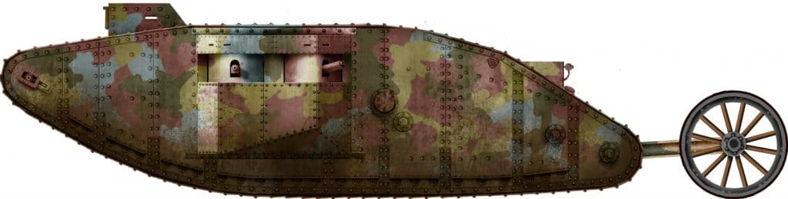

VELIKA BRITANIJA u Velikom ratu
Britanski inženjeri osmislili su originalan pristup problemu prelaska rova. Za razliku od Francuza, koji su u osnovi razvili nekakve oklopne kutije iznad modificirane Holtove traktorske šasije, njihovo je rješenje bila vrlo duga gusjenica, koja je u osnovi pokrivala cijelu dužinu i visinu trupa. Poznati profil romboidnog oblika postao je ikonski vizualni orijentir u povijesti tenkova, koji se odmah mogao identificirati s oklopnim vozilima iz Prvog svjetskog rata. Rješenje se pokazalo dobro prilagođenim najgorem zamislivom terenu.
Probijanje leda...
Mark I - Tenk Mark I označio je i zoru oklopnog ratovanja i početak cijele linije tenkova koji će uskoro pronaći svoje dragocjeno mjesto u gotovo svim vojskama svijeta. Važno je zapamtiti da, iako ratno oružje, usavršeno u umijeću smrti i razaranja na kopnu, tenk je također spasio živote, tisuće njih. Ovo je počelo upravo 1916., kada je prvi Mark Is pomogao vratiti samopouzdanje iscrpljenih i depresivnih boraca, nakon što su godinama bili tretirani kao topovsko meso. Ovo je bilo oružje koje će otključati zastoj i stati na kraj rovovskom ratu.
